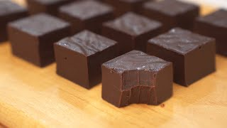

Chocolate Fudge

Description
Make the perfect homemade gift with our this Chocolate Fudge recipe. Made
with just two ingredients. There's no cooking involved (only a bit of
melting), so it's perfect to make with the kids for a quick and personal
gift for loved ones.
Ingredients
- Cooking oil
- 250g Dark chocolate
- 350g Condensed milk
Instructions
- Mix the chocolate and condensed milk and melt over low heat
- Line a 15cm mold with parchement paper and pour in the mix
- Refrigerate for 3 hours